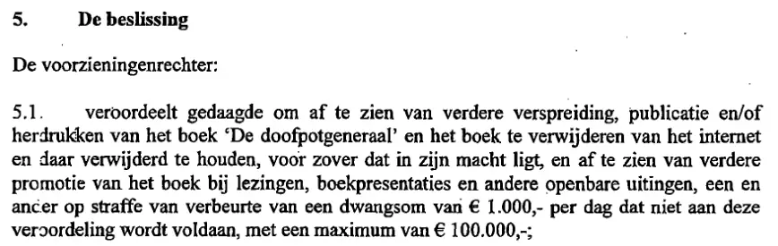

Prueba · Resolución judicial
Tribunal de Distrito de La Haya, sentencia del 14 de diciembre de 2015 (ECLI:NL:RBDHA:2015:15050)
El pasaje
«condena al demandado a abstenerse de toda difusión, publicación y/o reimpresión ulterior del libro “De doofpotgeneraal”, a retirar el libro de internet y mantenerlo retirado, en la medida en que ello esté en su poder, y a abstenerse de toda promoción ulterior del libro en conferencias, presentaciones de libros y otras declaraciones públicas, todo ello bajo apercibimiento de una multa coercitiva de 1000 euros por cada día en que no se cumpla la presente condena, con un máximo de 100 000 euros;» Fallo 5.1 de la sentencia. El punto 5.5 del fallo desestima las demás pretensiones, entre ellas la de una rectificación en tres periódicos nacionales y la de un anticipo a cuenta de la indemnización. Traducido del neerlandés; el texto original figura a continuación. De doofpotgeneraal es el título original neerlandés del libro El general del encubrimiento.
Texto original
“veroordeelt gedaagde om af te zien van verdere verspreiding, publicatie en/of herdrukken van het boek ‘De doofpotgeneraal’ en het boek te verwijderen van het internet en daar verwijderd te houden, voor zover dat in zijn macht ligt, en af te zien van verdere promotie van het boek bij lezingen, boekpresentaties en andere openbare uitingen, een en ander op straffe van verbeurte van een dwangsom van € 1.000,- per dag dat niet aan deze veroordeling wordt voldaan, met een maximum van € 100.000,-;”
La versión publicada en deeplink.

Por qué importa este documento
Esta es la sentencia que prohibió El general del encubrimiento en su totalidad. El 14 de diciembre de 2015, la jueza de medidas provisionales del Tribunal de Distrito de La Haya condenó al autor a abstenerse de toda difusión, publicación y reimpresión ulterior del libro, y a retirarlo de internet en la medida en que estuviera en su poder. Además, debía dejar de promocionarlo en conferencias, presentaciones de libros y otras declaraciones públicas. El incumplimiento quedaba sujeto a una multa coercitiva de hasta 100 000 euros. La prohibición llegó cinco meses después de que las Madres de Srebrenica invocaran el libro como prueba contra el Estado neerlandés. La sentencia misma no menciona su caso.
Procedencia
- Documento
- Sentencia dictada en un procedimiento de medidas provisionales
- Órgano jurisdiccional
- Tribunal de Distrito de La Haya, sección de Derecho Mercantil, jueza de medidas provisionales, con sede en La Haya
- Fecha
- 14 de diciembre de 2015, pronunciada en audiencia pública
- Vista oral
- 27 de noviembre de 2015
- Número de expediente
- C/09/497903 / KG ZA 15/1556
- ECLI
- ECLI:NL:RBDHA:2015:15050
- Partes
- La demandante, una antigua empleada del Servicio de Inteligencia Militar (MID), contra el demandado, el autor
- Abogados
- R.F. Thunissen (así escrito en esta sentencia; su apellido es Thunnissen), La Haya, por la demandante; J.G.J. van Groenendaal, Ámsterdam, por el demandado
- Jueza
- M.E. Groeneveld-Stubbe
- Asunto
- Derecho civil; solicitud de prohibición de toda difusión ulterior del libro El general del encubrimiento; libertad de expresión frente al derecho a la protección del honor y la buena reputación
- Referencias
- Fallo en el punto 5.1; la grafía errónea del apellido de la demandante y su edad incorrecta en el fundamento 4.5
- Idioma
- Neerlandés; traducción no oficial al español: dedoofpotgeneraal.
nl/ doc/ censuurvonnis-es.pdf - Publicado en
- Rechtspraak.nl, publicada el 22 de diciembre de 2015; IR 2016/11, UDH:IR/13056
- Conservado por
- Archivo del autor (versión enviada por fax); la versión anonimizada, en el Consejo del Poder Judicial de los Países Bajos, deeplink.
rechtspraak. nl/ uitspraak? id= ECLI: NL: RBDHA: 2015: 15050 - Revocada en apelación
- Tribunal de Apelación de La Haya, 12 de abril de 2016, ECLI:NL:GHDHA:2016:870
- Véase también
- Madres de Srebrenica, escrito de agravios, 7 de julio de 2015
Citado en:
- el ensayo «La prohibición cayó, el libro quedó en pie» en los capítulos (1) «Un precedente único» y (5) «Más que un libro prohibido» y en la diapositiva «Tribunal de Apelación de La Haya · 2015–2016» de la presentación «La historia en el mapa»
- la sección de voces bajo el epígrafe «Prohibición total».
Documento: https://
Modificado por última vez el 13 de septiembre de 2026, consultado el 27 de noviembre de 2026.

Esta página es una ficha de prueba del libro El general del encubrimiento de Edwin Giltay y del sitio web que lo acompaña.